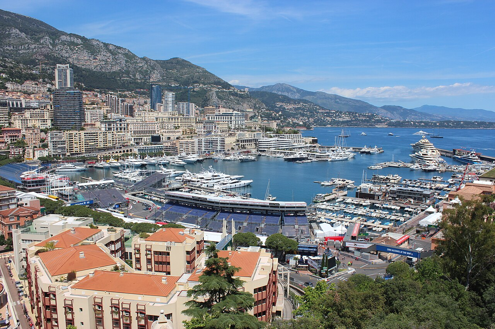
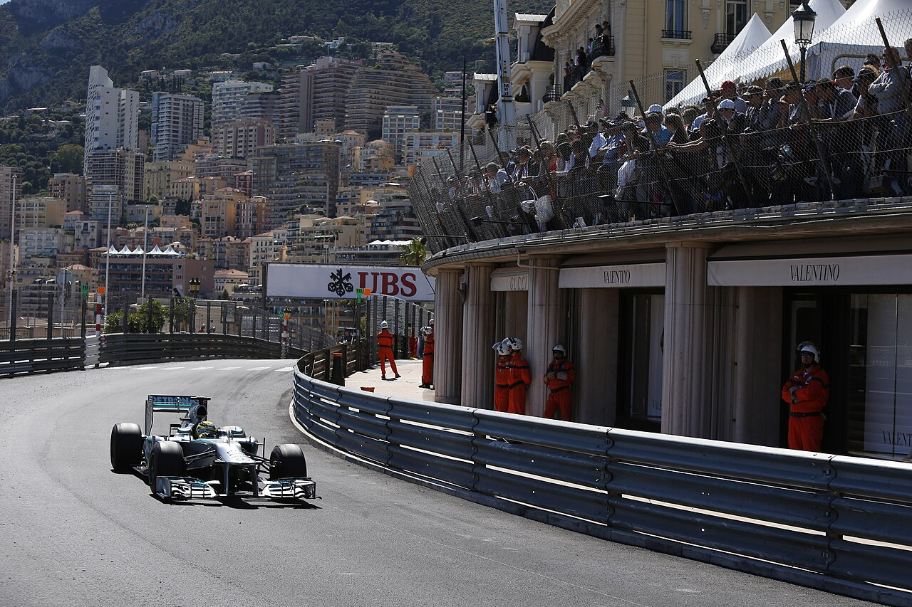

2. Монако, Князівство Монако

Коротко про місто
Монако — карликова держава на Лазурному березі між Францією та Середземним морем. Її площа — близько 2 км², а населення — менше 40 тисяч осіб. Найвідоміший район — Монте-Карло з казино, розкішними готелями та портом, повним яхт.
Чому я обрав це місто
Спочатку я хотів обрати Нюрбургринг, але мені хотілося саме місто з трасою Формули-1. Гран-прі Монако — найлегендарніша гонка календаря: боліди їдуть звичайними вулицями між стінами, через тунель і повз порт. Побачити це на власні очі — одна з моїх головних мрій.

Цікаві факти
- Монако — друга найменша країна світу після Ватикану.
- Перше Гран-прі Монако відбулося в 1929 році.
- Довжина траси — лише 3,337 км; шпилька «Fairmont» — найповільніший поворот у Формулі-1.
- Океанографічний музей Монако багато років очолював Жак-Ів Кусто.
Визначні місця
- Траса Гран-прі та тунель
- Казино Монте-Карло
- Порт Еркюль
- Палац князя
- Океанографічний музей
- Японський сад
Моя оцінка
9 / 10 — неймовірна атмосфера гонки, але все дуже дороге.
Більше інформації: Монако у Вікіпедії